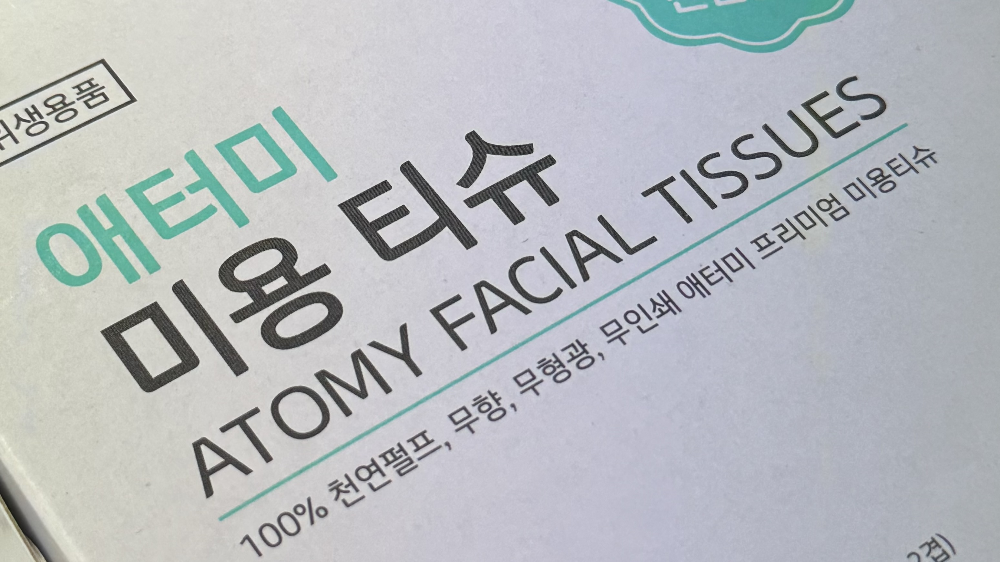

티슈
티슈는 나무 펄프를 가공한 셀루 코튼으로 만든 일회용 화장지의 상표명이다. 외래어이지만 한국에서는 일반적으로 티슈라고 하면 일회용 화장지를 가리킬 정도로 일반 명사화가 되었다. 1921년 킴벌리 클락에서 티슈를 처음 생산하며 한국에서도 외래어를 사용하게 된 것이다. 나는 이 점에서 티슈가 상표명임을 처음 알게 되었다. 화장지, 휴지, 단장지 등 대신 순화할 수 있는 한국어가 있음에도 티슈라는 외래어를 사용하는 것은 불필요하다고 생각한다. 또, 외국어에 취약한 노인 계층으로 인해 언어 소외계층이 생길 수도 있다. 소외 계층이 형성되면 세대 간의 소통 단절 문제가 뒤따라 생기며 악순환이 반복된다. 티슈가 일상 속에서 꼭 필요한 단어인지 생각해 봐야 할 것 같다.